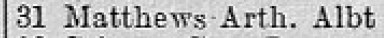
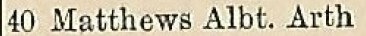
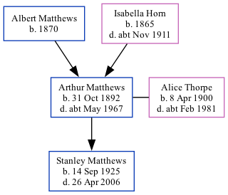

Arthur Albert Matthews 1892 - c1967
[ Home ] | [ Calendar ] | [ Surnames Index ] | [ Family History ]The son of Albert Matthews and Isabella Horn, Arthur Matthews, the second cousin twice-removed on the father's side of Nigel Horne, was born in Ramsgate, Kent, England on Oct 31, 18921,2,3,4, was baptized there at Christ Church on Jan 10, 1893 and married Alice Thorpe (with whom he had 1 child, Stanley George) in Thanet, Kent, England around Feb 19216. Like his father, he was a mariner.
Arthur spent all of his life in Kent, England. Throughout his life, he lived in several places around the county: on Royal Road in Ramsgate on Apr 2, 19111; at 40 Hertford Street in Ramsgate in 1935 and in 1936; at 1 Spring Villas in Ramsgate on Sep 29, 19392; and at 31 Albert Street in Ramsgate in 19557 and in 19658. He served in the military from 1914 to 1918 (service number: SD 532).
He died c. May 1967 in Thanet5.
Parents
- Albert was born in 1870
- Isabella was born in 1865
Children
- Stanley George was born on Sep 14, 1925
Citations
- 1911 Census for England & Wales - Findmypast (was age 18 and the son of the head of the household)
- 1939 Register - Findmypast (was the head of the household)
- England & Wales births 1837-2006 - Findmypast
- Lives Of The First World War 1914-1918 - Findmypast
- England & Wales deaths 1837-2007 - Findmypast
- England & Wales Marriages 1837-2005 - Findmypast
- 1955 Kelly's Thanet Directory
- 1965 Kelly's Thanet Directory
Media
1955 Kelly's Thanet Directory

1965 Kelly's Thanet Directory
1936 Kelly's Thanet Directory

1935 Kelly's Thanet Directory
England & Wales births 1837-2006 - BMD/B/1892/4/AZ/000366/116
1939 Register - TNA/R39/1766/1766J/024/21
England & Wales marriages 1837-2005 - BMD/M/1921/1/AZ/000742/144
Kent Baptisms - GBPRS/CANT/B/96523397
England & Wales deaths 1837-2007 - BMD/D/1967/2/AZ/000610/162
Lives of the First World War 1914-1918 - GBM/LIVES/7695336
Family Tree
Generated by Ged2Site. Last updated on Jul 20, 2025